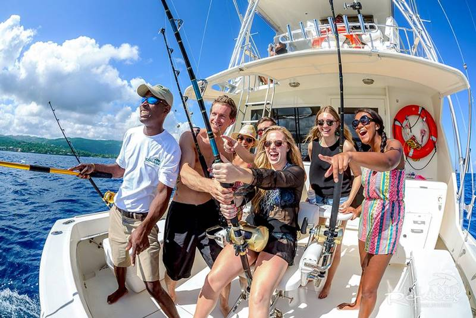
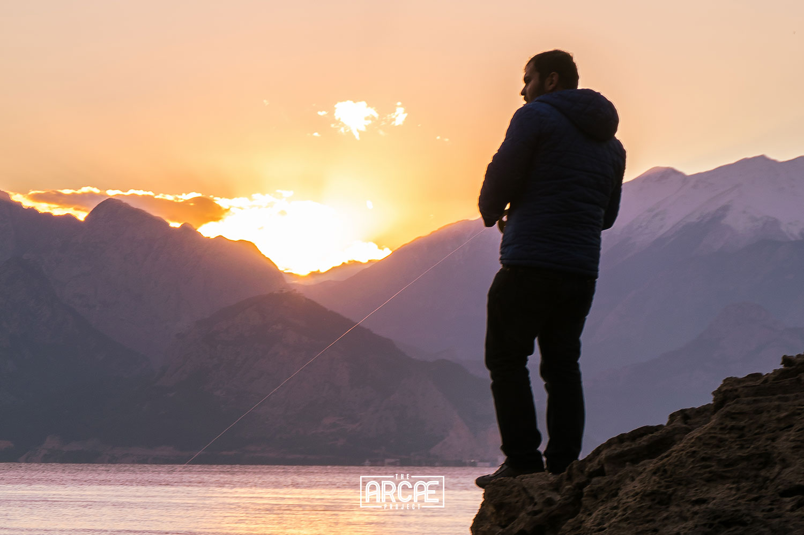
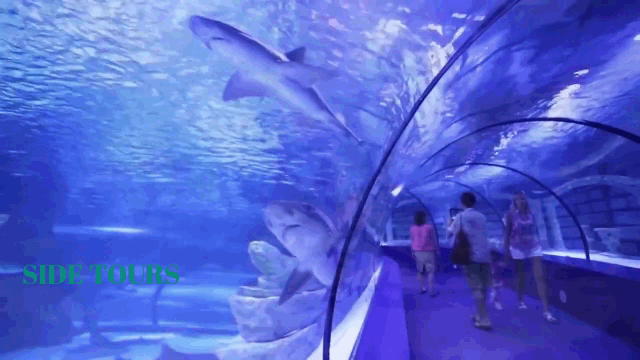
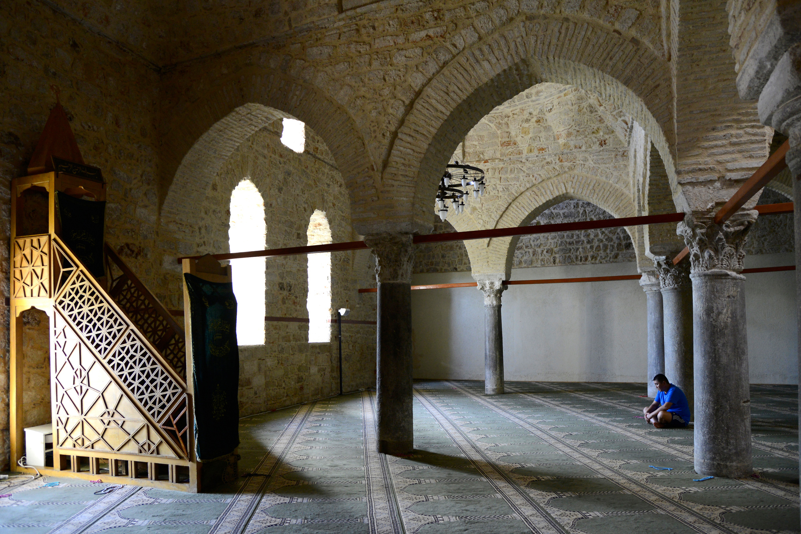
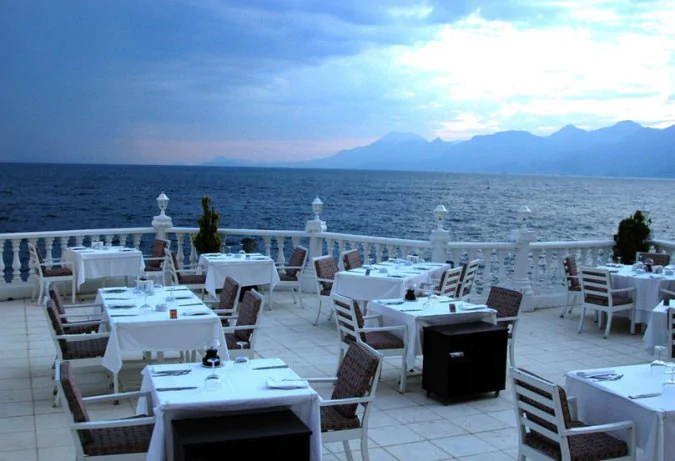
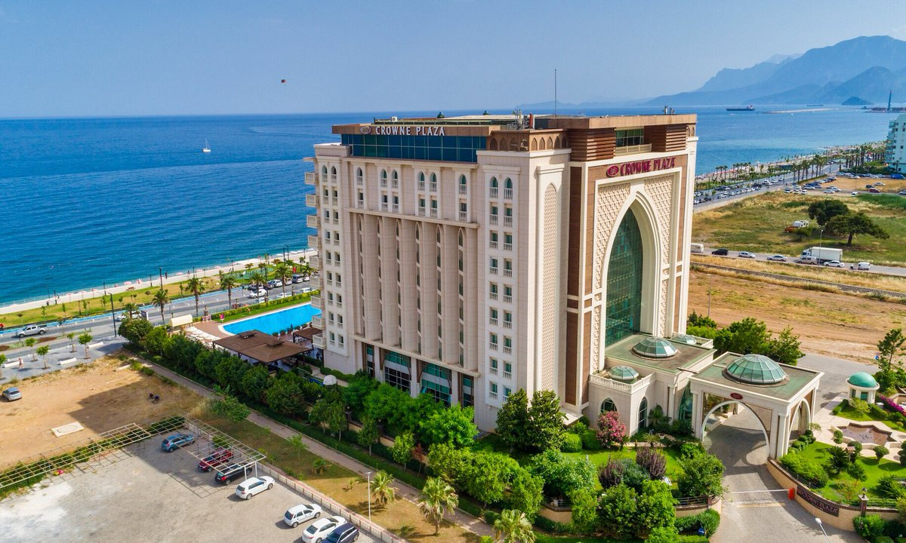

Antalya Duden Waterfall
 Duden Waterfall
Duden Waterfall
One of Antalya Five star hotel
Anatalya Five Stair Hotel
Antalya Boat rides
Enjoy Antalya Boat Rides with Family&Friends
Antalya's Speed Boats
Anatalya's Speed Boat Ribes
Enjoy the Best Trip on Antalya's Big Boats
 Boats Rides Trip in Antalya
Boats Rides Trip in Antalya
Antalya's beautiful Boats
Couples also Spend Great times in Antalya's Private Boats
Antalya, Archaeological Museum
Archaeological Sculpture in Antalya
| Museum |
Potrait Statue | Head Sculpture | Achelogical Sculpture |
| | | |
| | | |
| | | |
Antalya, Toy Museum
Black and Yellow, Stunning Toys
Antalya, Toy Museum
Mr Rabbit (Sculpture-Toy)
Antalya, Toy Museum
The Pink Lion(Sculpture-Toy)
Kids Playing Around with Toys
A Toy Architecture in famous Antalya Toy Museum
Deep fishing in Antalya
 Deep fishing in Antalya
Deep fishing in Antalya
| Deep fishing |
Net fishing | A visitor in Antalya holding a big
Fish from Antalya deep seas | |
 | | |
|  |  | |
| |  |
Antalya's largest Aquarium
 A Family at Antalya's Aquarium
A Family at Antalya's Aquarium
Vistors Across the World at Antalya Aquarium

Visitors moving Antalya's Aquarium
Visitors at Antalya's Aquarium
Mosque in Antalya
| Shallow rains in Antalya Mosques tour |
Antalya Tall Mosque tour | Minardi Mosque | . |
| | |
| | |
|  |  | |
Mosques found in Antalya
The interior of Manavgat Mosque in Antalya
Antalya's Five stair Hotels
Antalya's Boat Rides
Restuarants in Antalya
| Food offered in Antalya |
Delicious Food Spicies | Arranged Chair setup | Asthetic Chair setup |
| | | |
|  | | |
| |  | |
Antalya's Boat Rides
 Confortable Accomodation in Antalya
Confortable Accomodation in Antalya
Antalya's Boat Rides
Antalya Fivestair Hotel near the sea
Antalya's Boat Rides
One of the Best Fivestair Hotels in Antalya
Antalya's Boat Rides
Antalya Hotel Resort & Spa, Antalya
Antalya's Boat Rides
Antalya's Largest Fivestair Hotel
Antalya's Boat Rides

Crowne Plaza Hotel, Antalya